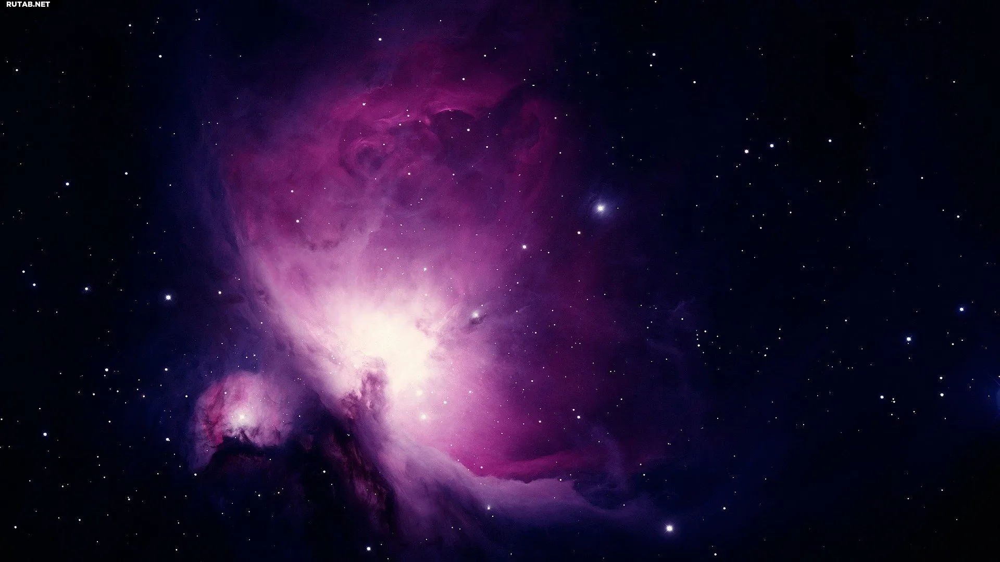
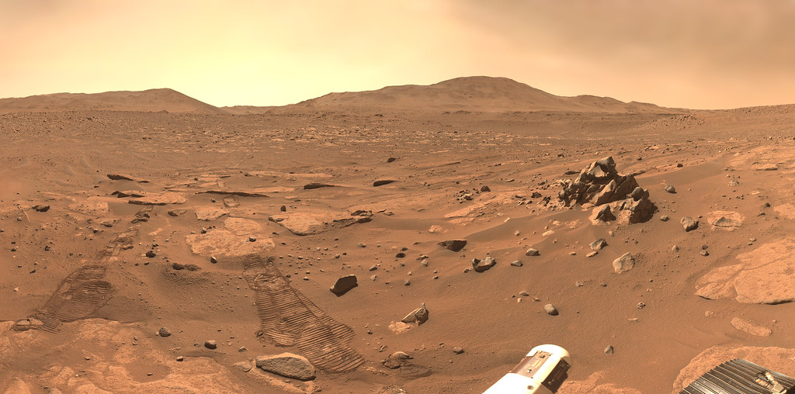
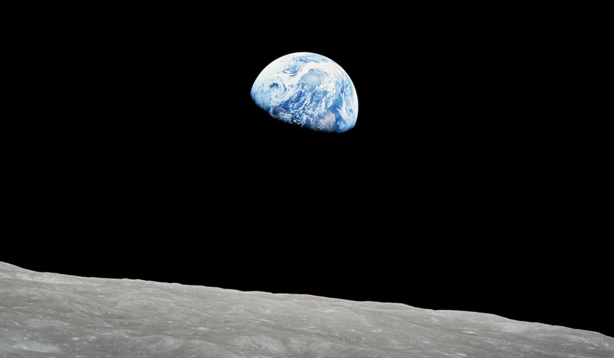
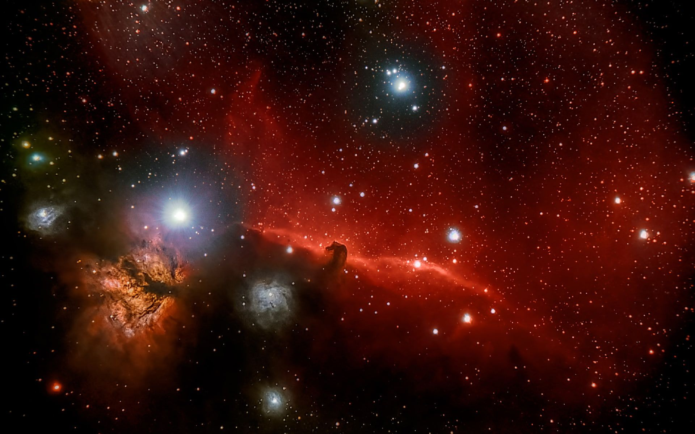
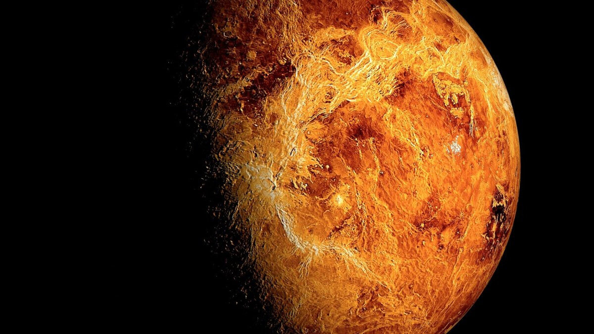
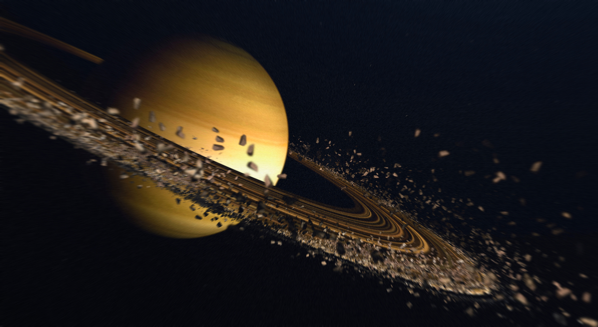
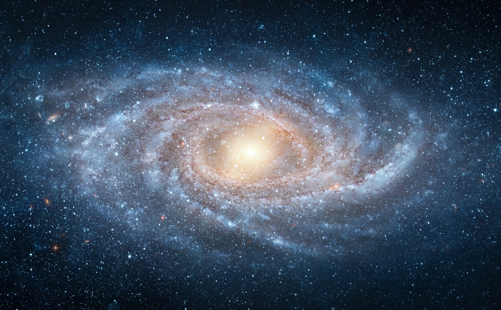

Добро пожаловать в удивительный мир космоса!
На этом сайте вы познакомитесь с важнейшими достижениями человечества в исследовании космического пространства, увидите впечатляющие изображения космических объектов и сможете поделиться своими мыслями о космосе.

Интересные факты о космических исследованиях
- Первым человеком в космосе стал Юрий Гагарин, совершивший полет 12 апреля 1961 года на корабле "Восток-1".
- Международная космическая станция (МКС) — самый дорогой объект, когда-либо построенный людьми. Его стоимость оценивается более чем в 150 миллиардов долларов.
- Космический телескоп Джеймса Уэбба, запущенный в 2021 году, является самым мощным космическим телескопом и способен наблюдать объекты, удаленные от нас на 13,6 миллиардов световых лет.
- На Марсе находится самая высокая гора в Солнечной системе — вулкан Олимп, высота которого достигает 22 км.
- Скафандр для выхода в открытый космос стоит около 12 миллионов долларов.
- Луна постепенно удаляется от Земли со скоростью около 3,8 см в год.
- В 2020-х годах началась новая эра исследования Луны с программами Артемида (NASA) и другими международными миссиями.
Галерея космических изображений

Поверхность Марса, исследуемая марсоходами

Вид на Землю с лунной орбиты

Туманность Ориона — область звездообразования

Венера - вторая планета от Солнца

Великолепные кольца Сатурна

Наша галактика - Млечный Путь
Обратная связь
Если вы хотите поделиться своими мыслями о космосе или задать вопрос, заполните форму ниже: